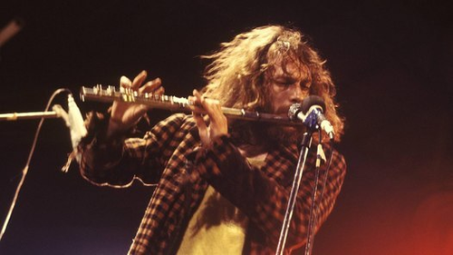

Saturday, April the 5th, 2014
back to: title, date or indexes
Never, never admit to being a flute-player with a rock band.
The monopod flautist dispenses advice for travellers. (Thanks to Alasdair Dickson for drawing this to my attention. Now I must go and listen to Aqualung.)
